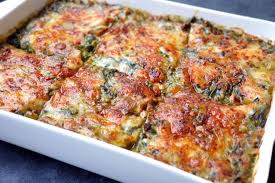

Ispanaklı Fırın Patates
9 adet tavuk baget
Malzemeler
2 adet patates
500 gram ıspanak
2 adet kuru soğan
1 paket krema
2 diş sarımsak
1,5 su bardağı rendelenmiş kaşar peyniri
3/4 (bir yarım+bir çeyrek) çay bardağı zeytinyağı
1 yemek kaşığı tereyağı
2 çay kaşığı tuz
Birer çay kaşığı muskat tozu, karabiber, kırmızı toz biber, pul biber
Hazırlanışı
Zeytinyağını yapışmaz bir tavada iyice ısıtın.
Küp doğradığınız soğanları solana dek kavurun.
İnce ince küçük parçalar halinde doğradığınız patatesleri ekleyin ve ara ara karıştırarak renk değiştirip hafif kızarana dek kavurun.
Kıydığınız ıspanağı, rendelediğiniz sarımsağı, baharatları ve kremayı ekleyin ve karıştırın.
Altını kısın, ağzını kapatın ve patatesler pişene kadar yine ara ara karıştırın.
Tereyağını ekleyin, yağ eriyince karıştırıp altını söndürün
28×22 ebatlarında fırın kabını tereyağı ile yağlayın.
Harcın yapışmaması için kabı unlayın.
Kabı sallayarak unun her yere yayılmasını sağlayın, fazlasını dökün.
Hazırladığınız harcı kaba eşit şekilde yayın.
Önce rendelediğiniz kaşar peynirini ardından pul biberi harcın üzerine serpin.
180° önceden ısıtılmış fırında kaşarlar eriyip kızarıncaya dek pişirin.